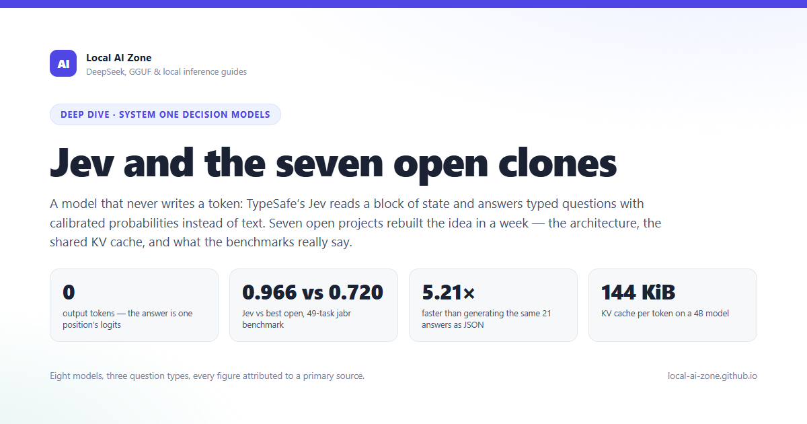
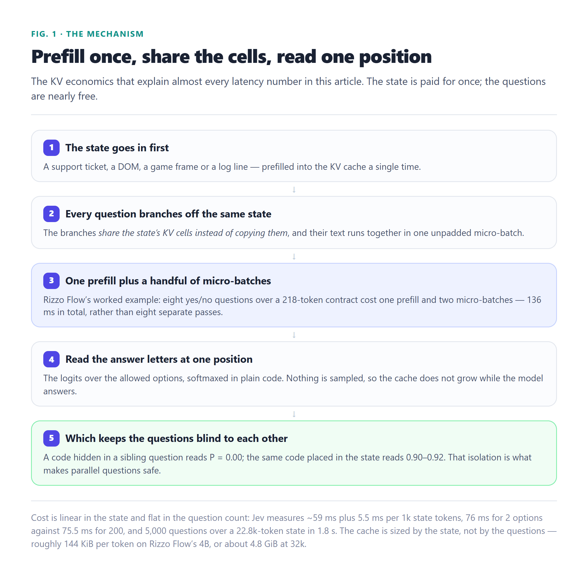
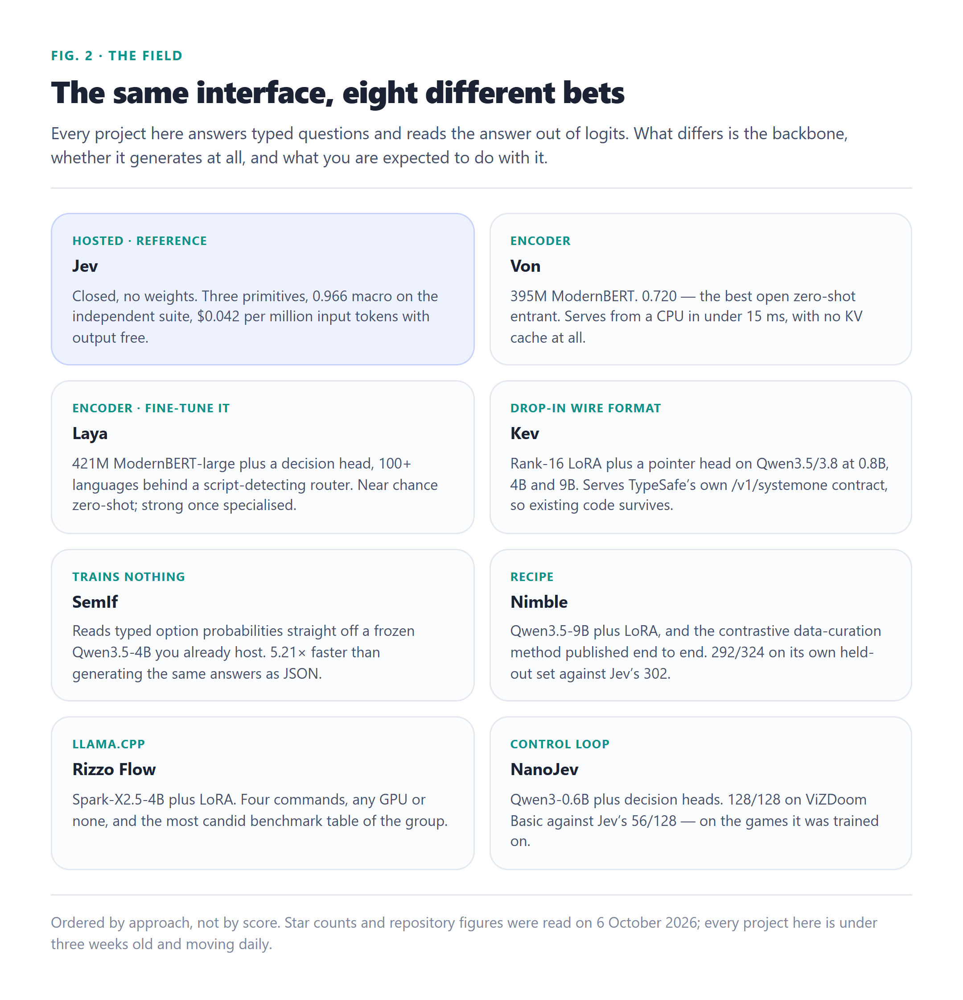

1200×630 · hero · hero · system-one-decision-models-deep-dive.html

2160×2124 · flow · figure · system-one-decision-models-deep-dive.html

2160×2241 · grid · figure · system-one-decision-models-deep-dive.html

2160×1380 · bars · figure · system-one-decision-models-deep-dive.html